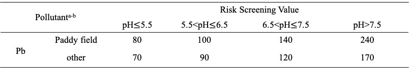
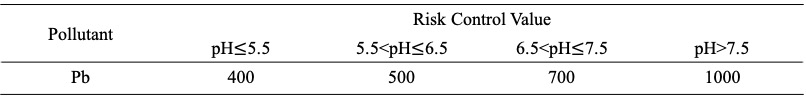

End Users：Agricultural Producer
Firstly, remediation of heavy metal contaminated soil may provide direct benefits to farmers, who are more frequently exposed to the soil heavy metal pollution than other ordinary people. It is known that lead pollution is one of the important causes of disease. According to a large domestic epidemiological survey in 2015, the average blood lead level(BLL) of urban children under the age of 6 in China was 35.35μg/L, higher than that of 20μg/L～25μg/L in the US in 2000 and that of less than 30μg/L in Europe. The situation must be more serious when it comes to the farmers’ children, who may be affected by not only the heavy-metal-polluted food but also the polluted soil. The solution of soil problems may remove one threat to their health.
Secondly, remediation of heavy metal contaminated soil may help farmers in China recover their economic loss caused by heavy metal pollution. It is reported that in China, 12 million tons of vegetables and crops are polluted by heavy metals annually, causing an economical loss of 20 billion yuan. The solution of soil problems would save the vegetables and crops, and in turn bring income to farmers.
How to use
We envision that others can form a closed loop between laboratories, biological companies, and farms when using our approach devised in this project.
After obtaining the engineered bacteria in the laboratory, we will register them for patents and sell them to biotechnology companies and provide certain technical support.
The biotechnology companies will carry out further screening, expansion and freeze-drying preservation. They will wash the artificially cultivated earthworms and put them in a turnover box with moist absorbent paper, followed by adding the freeze-dried powder of engineered bacteria. After that, they will take out and wash them after one day, and sell them to farmers, while providing a certain assessment of heavy metal pollution in farmland.
Before planting each season, farmers inoculate earthworms in the cultivated land and supplement the inoculation according to the changes in the number of earthworms. At the same time, farmers will provide some real application feedback for the laboratory to make technical improvements.
As for the number of inoculated earthworms, we simulated the relationship between different inoculation amounts and effects through mathematical models. So far, we have chosen the inoculation amount of earthworms as 60g/m2
linke to the celluar model pageFuture Applications
In addition to traditional applications, we envision the future development and application of our project.
- Used in vermicomposting.
- Multi-functional application
- Sustainable application.
Earthworms eat a lot of manure and take advantage of the synergy of intestinal microbes. They can efficiently transform organic matter and accelerate fertilizer maturity. However, the lead in “farm manure” is also an important source of lead pollution on farmland. If earthworms inoculated with engineered bacteria are applied to vermicomposting, they will greatly reduce the lead pollution in fertilizers entering the soil and avoid the use of chemical fertilizers, which will promote the development of vermicomposting and contribute to the sustainable agriculture.
After the engineered bacteria have made progress in the treatment of lead pollution, we will design other recombinase to obtain free dissociative sulfur and phosphate groups to deal with other heavy metal pollution.
After fully verifying the safety and security of the project, we plan to release the engineered bacteria directly into the soil environment to ensure their role in every generation, which will greatly reduce the cost of project implementation.
Applications in the Real Word
When it comes to the applications in the real word, we believe that the cultivated land in southern China is the most suitable agricultural land that meets our expectations.
First of all, the lead concentration in polluted southern cultivated lands is mostly in the range between the screened value and the controlled value, according to the soil risk control standards for agricultural lands issued by the Chinese government in 2018. This is a relative ideal range to apply our approach. In the national soil risk control standards, the quality and safety of edible agricultural products were taken to set the screening value and control value of soil pollution risk in agricultural land. When the lead content of cultivated land exceeds the screening value, the quality and safety of agricultural products may be at risk, while the risk is higher when the lead content exceeds the control value.
 Secondly, in southern China the engineered bacteria carrier—Eisenia fetida is commonly used as one of vermicomposting species in agricultural production. It shows good heavy metal tolerance in heavy metal contaminated sites，which ensures the normal growth of our earthworms and have a certain effect on the treatment of lead pollution in the soil at the same time.
Safety
Due to the isolation during the epidemic, we cannot enter the laboratory for experiments this year, but safety work is always of first priority. We studied lectures and regulations related to safety and ethics to improve the safety awareness of our team members.
Security of project design
-
Our project envisages using Bacillus subtilis WB800N as the chassis organism, Bacillus subtilis YCD as the source of phytase, and Eisenia vulgaris as the engineering bacteria carrier. Bacillus subtilis is a very safe and commonly used strain in laboratories, and usually does not cause obvious risks to human health, the community or the environment. Eisenia Fetida is a widespread species in China and is widely used as a compost species in southern China. And our project will not release engineered bacteria and earthworms into the environment. Therefore, our project is very safe.
-
We designed a suicide switch in the gene pathway to initiate suicide when the engineered bacteria enter the environment, avoiding the risk of gene drift to the greatest extent.
Overall biosafety
Gene safety
Implement security
When we envision the project to function in the soil environment in the real world, we will follow the principle of gradual evaluation, and gradually increase the release scale.
After obtaining the earthworms containing engineered bacteria, we envisaged building an ecological box similar to the soil environment of the target cultivated land. We will apply earthworms in the ecological box, and conduct ecological evaluation after a period of time, mainly considering the quantity of soil organisms and whether the engineered bacteria in the soil contains live engineered bacteria, etc.
After ensuring the safety of the application in the ecological box, we will conduct a release evaluation in the test field of Nanjing Agricultural University located in the Baima Experimental Base of Nanjing. We will design 3 different release scales, namely, 100 bars/m2, 130 bars/m2, and 160 bars/m2 to gradually expand the release scale. If other soil biomass is found to be abnormally reduced or the number of engineered bacteria detected in the soil environment exceeds the error range, we will immediately stop the release and improve the pathway.
In short, we will evaluate each step of the implementation and rationally optimize the implementation plan.
Laboratory safety
The isolation during the epidemic prevent us from entering the laboratory for experiments this year, but we still have received laboratory safety training and passed the laboratory safety exam. We are familiar with laboratory safety operations and emergency measures.


The following are our supplementary materials to ensure laboratory safety:
PDF file nameCHALLENGE
How to ensure the activity of earthworms and engineered bacteria？
Soil animals are sensitive to the toxicity of pesticides. Long-term use of pesticides has a great impact on the types, quantity, flora and respiratory intensity of soil animals. Relevant studies have shown that pesticide pollution will lead to the decline of soil microbial functional diversity, and also reduce the use of carbon substrates by microorganisms. Therefore, the use of pesticides and chemical fertilizers on farmland may cause problems, for example, low activity of earthworms or engineered bacteria
However, the development of earthworm composting technology can improve the utilization efficiency of nutrients in organic fertilizer by plants. Therefore, if follow-up research can give full play to the synergistic effects of vermicomposting and beneficial microorganisms, the use of pesticides and chemical fertilizers can be greatly reduced.
Wrong suicide
When the biological company feeds the freeze-dried powder to earthworms, the engineered bacteria can be recovered in the turnover box, which will lead to abnormal suicide of the engineered bacteria
This kind of wrong suicide requires two conditions. One is the leakage of the promoter that controls the expression of trigger RNA. The other is the recovery of the engineered bacteria in the turnover box. However, the relatively dry environment in the turnover box is not conducive to the recovery of the engineered bacteria. Therefore, the possibility of wrong suicide is very low, and the loss caused is small as well.
REFERENCE
- [1] Zhang W X，Shen Z F，Shao Y H，Shi L L，Liu S J，Shi N N，Fu S L．Soil biota and sustainable agriculture: A review． Acta Ecologica Sinica，2020，40 ( 10) : 3183-3206.
- [2] Xu Qin. An overview of the geographical distribution of terrestrial earthworms in China[J]. Journal of Beijing Institute of Education, 1996(03): 54-61.